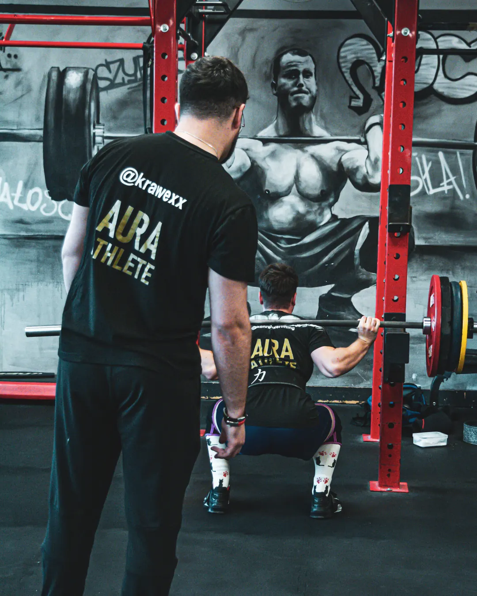

Przygotowanie motoryczne i rozwój sportowy
Prowadzę zawodników indywidualnie, uwzględniając wymagania ich sportu, poziom zaawansowania i cele treningowe.
Pracuję między innymi z zawodnikami trójboju siłowego, sportów walki oraz piłki nożnej. Wspieram również osoby uprawiające inne dyscypliny, które chcą poprawić siłę, dynamikę, sprawność i jakość treningu.
Tworzę i realizuję programy treningowe dopasowane do zawodnika — od rozwoju podstawowych zdolności motorycznych po bardziej zaawansowane przygotowanie fizyczne.